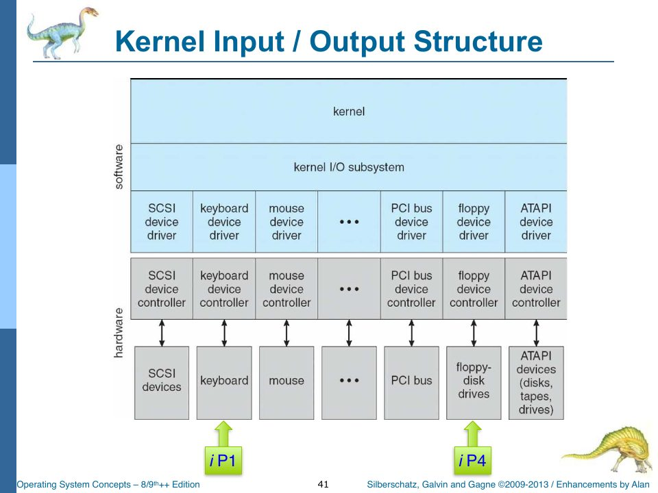

Booting, Interrupts, and the Mode Bit
Slides: Chapter 1, pp. 25–41 and 54–56 (startup, interrupts, dual mode, the timer); Chapter 2, p. 155 (system boot); Chapter 13.2 of the textbook (kernel I/O structure), which the syllabus assigns in week 2.
We now cross the line from simulated hardware into the operating system. kernel.ts is the largest file in source/os/ after the shell, and it’s the one everything else hangs from. This chapter covers its skeleton: how it starts, how it stops, and the loop that drives it. The process-management parts of the kernel (dispatch, kill, swap) get their own chapters later.
Bootstrap
The host’s Start button ends with _Kernel = new Kernel(); _Kernel.krnBootstrap();. Here is the bootstrap:
public krnBootstrap() {
this.enterKernelMode("Bootstrap");
// Page 8. {
Control.hostLog("bootstrap", "host"); // Use hostLog because we ALWAYS want this, even if _Trace is off.
// Initialize our global queues.
_KernelInterruptQueue = new Queue(); // A (currently) non-priority queue for interrupt requests (IRQs).
_KernelBuffers = new Array(); // Buffers... for the kernel.
_KernelInputQueue = new Queue(); // Where device input lands before being processed out somewhere.
_ReadyQueue = new Queue();
_Swapper = new Swapper();
// Initialize the console.
_Console = new Console(); // The command line interface / console I/O device.
_Console.init();
// Initialize standard input and output to the _Console.
_StdIn = _Console;
_StdOut = _Console;
// Load the Keyboard Device Driver
this.krnTrace("Loading the keyboard device driver.");
_krnKeyboardDriver = new DeviceDriverKeyboard(); // Construct it.
_krnKeyboardDriver.driverEntry(); // Call the driverEntry() initialization routine.
this.krnTrace(_krnKeyboardDriver.status);
// Load the Disk Device Driver
this.krnTrace("Loading the disk device driver.");
_krnDiskDriver = new DeviceDriverDisk();
_krnDiskDriver.driverEntry();
this.krnTrace(_krnDiskDriver.status);
//
// ... more?
//
// Enable the OS Interrupts. (Not the CPU clock interrupt, as that is done in the hardware sim.)
this.krnTrace("Enabling the interrupts.");
this.krnEnableInterrupts();
// Launch the shell.
this.krnTrace("Creating and Launching the shell.");
_OsShell = new Shell();
_OsShell.init();
// Finally, initiate student testing protocol.
if (_GLaDOS) {
_GLaDOS.afterStartup();
}
this.exitToUserMode();
}
In order:
- Enter kernel mode and log
bootstrapwithhostLog(notkrnTrace, because this line should appear even if tracing is off). - Build the kernel’s queues. The interrupt queue holds pending interrupt requests. The input queue holds characters the keyboard driver has decoded. The ready queue holds processes waiting for the CPU. And a swapper for later.
- Create the console and point standard input and standard output at it.
_StdInand_StdOutare abstractions: everything else in the OS prints with_StdOut.putTextand never needs to know it’s a canvas. - Load the device drivers: construct each one and call its
driverEntry()initialization routine, then trace its status. (The disk driver’s entry routine just setsstatus = "loaded"; it doesn’t format anything. The disk is formatted lazily, the first time anything reads it.) - Enable interrupts.
- Launch the shell, which prints the first prompt.
- Hand control to GLaDOS, if she’s loaded, so she can start typing tests.
- Exit to user mode.
Compare it with the slide’s description of a bootstrap program: “Initializes all aspects of system. Loads operating system kernel and starts execution” (slide p. 25). In rObSen the browser has already loaded all the code (as <script> tags), so “loading the kernel” means constructing the Kernel object; the rest is initialization.
The heartbeat: one tick, one unit of work
public krnOnCPUClockPulse() {
/* This gets called from the host hardware simulation every time there is a hardware clock pulse.
This is NOT the same as a TIMER, which causes an interrupt and is handled like other interrupts.
This, on the other hand, is the clock pulse from the hardware / VM / host that tells the kernel
that it has to look for interrupts and process them if it finds any.
*/
// Check for an interrupt, if there are any. Page 560
if (_KernelInterruptQueue.getSize() > 0) {
// Process the first interrupt on the interrupt queue.
// TODO (maybe): Implement a priority queue based on the IRQ number/id to enforce interrupt priority.
var interrupt = _KernelInterruptQueue.dequeue();
this.krnInterruptHandler(interrupt.irq, interrupt.params);
} else if (_CPU.isExecuting) {
// If there are no interrupts then run one CPU cycle if there is anything being processed.
_CPU.cycle();
} else {
// If there are no interrupts and there is nothing being executed then just be idle.
this.krnTrace("Idle");
}
Control.hostUpdateDisplays();
}
This is the most important function in the OS, and it’s 22 lines. Every 100 ms the host calls it, and it does exactly one of three things:
- If an interrupt is pending, handle one interrupt.
- Otherwise, if the CPU is executing, run one instruction.
- Otherwise, idle.
Then it refreshes the displays.
Interrupts always win. That’s the right priority (an interrupt is something that needs attention now), and it means a user program can’t starve the keyboard: while you’re typing, each keystroke costs the running program one instruction. It also means interrupts are handled only between instructions, never in the middle of one, which is how real CPUs behave and what the project spec requires.
krnStep (used by the Step button) is the same logic, but called by hand, one tick at a time:
public krnStep(): void {
this.enterKernelMode("Step");
_OSclock++;
if (_KernelInterruptQueue.getSize() > 0) {
const interrupt = _KernelInterruptQueue.dequeue();
this.krnInterruptHandler(interrupt.irq, interrupt.params);
} else if (_CPU && _CurrentProcess) {
_CPU.step();
} else {
this.krnTrace("Idle");
}
Control.hostUpdateDisplays();
this.exitToUserMode();
}
Enabling and disabling interrupts
public krnEnableInterrupts() {
// Keyboard
Devices.hostEnableKeyboardInterrupt();
// Put more here.
}
public krnDisableInterrupts() {
// Keyboard
Devices.hostDisableKeyboardInterrupt();
// Put more here.
}
The kernel asks the host (the “hardware”) to connect or disconnect the keyboard’s interrupt line, which in browser terms means adding or removing a keydown listener. The timer needs no enabling; it’s part of the CPU. And notice the asymmetry that the comment in krnBootstrap points out: the clock is never disabled by the kernel. Only the host’s Halt button stops it.
The interrupt handler
public krnInterruptHandler(irq, params) {
this.enterKernelMode("Interrupt");
// This is the Interrupt Handler Routine. See pages 8 and 560.
// Trace our entrance here so we can compute Interrupt Latency by analyzing the log file later on. Page 766.
this.krnTrace("Handling IRQ~" + irq);
// Invoke the requested Interrupt Service Routine via Switch/Case rather than an Interrupt Vector.
// TODO: Consider using an Interrupt Vector in the future.
// Note: There is no need to "dismiss" or acknowledge the interrupts in our design here.
// Maybe the hardware simulation will grow to support/require that in the future.
switch (irq) {
case TIMER_IRQ:
this.krnTimerISR(); // Kernel built-in routine for timers (not the clock).
break;
case KEYBOARD_IRQ:
_krnKeyboardDriver.isr(params); // Kernel mode device driver
_StdIn.handleInput();
break;
default:
this.krnTrapError(
"Invalid Interrupt Request. irq=" +
irq +
" params=[" +
params +
"]",
);
}
this.exitToUserMode();
}
The interrupt handler (sometimes called the first-level interrupt handler, or the interrupt dispatcher) has one job: figure out which interrupt this is and call the right interrupt service routine (ISR). rObSen does it with a switch on the IRQ number, as discussed in Chapter 1.
TIMER_IRQ→krnTimerISR, the scheduler’s entry point (Chapter 13).KEYBOARD_IRQ→ the keyboard driver’s ISR, which decodes the key and queues a character; then_StdIn.handleInput(), which drains the character queue into the console. That second call means console processing (echoing, line editing, and, when Enter is pressed, running the whole shell command) happens inside the keyboard interrupt. Real kernels split this into a fast “top half” that just queues the data and a deferred “bottom half” that processes it later. rObSen does both halves at once, which is simpler and fine for a single-user teaching OS.- Anything else →
krnTrapError: an unknown IRQ is a fatal error.
The comment “There is no need to ‘dismiss’ or acknowledge the interrupts in our design” refers to a real hardware step: after servicing an interrupt, the OS must tell the interrupt controller it’s done (an “end of interrupt” signal), or the controller won’t deliver the next one. Dequeueing does that implicitly here.

The mode bit
private enterKernelMode(reason: string): void {
_Mode = MODE_KERNEL;
if (_Trace) {
Control.hostLog(`Mode -> Kernel (${reason})`, "OS");
}
_ModeDisplayUpdater?.();
}
private exitToUserMode(): void {
_Mode = MODE_USER;
if (_Trace) {
Control.hostLog("Mode -> User", "OS");
}
_ModeDisplayUpdater?.();
}
Every kernel entry point calls enterKernelMode(reason) on the way in and exitToUserMode() on the way out, and each transition is logged with its reason: Mode -> Kernel (Interrupt), Mode -> Kernel (Timer), Mode -> Kernel (Run PID). _ModeDisplayUpdater is a function pointer the host installs so the kernel can refresh the “Mode” cell in the CPU panel without knowing anything about the DOM. (?.() calls it only if it’s been set; see Chapter 6a.)
This is slide p. 54 made visible: “Dual-mode operation allows OS to protect itself… Mode bit provided by hardware… System call changes mode to kernel, return from call resets it to user.”
Two caveats, which follow from Chapter 1’s observation that nothing checks the bit:
- Transitions nest without a stack.
krnInterruptHandlerenters kernel mode, callskrnTimerISR, which enters kernel mode again and exits to user mode before returning, after which the handler exits to user mode a second time. The final state is right, but for a moment inside the handler the bit says “user” while kernel code is still running. - The kernel “exits to user mode” even when there’s no user process to return to (for instance at the end of bootstrap and shutdown). On a real machine, “user mode with nothing running” would be the idle loop.
A more faithful design would have the CPU set the mode: switch to kernel mode on any interrupt or trap, and switch to user mode only when dispatching a process. Then the bit would mean “is user code running?”, which is exactly what the memory accessor needs to know (Chapter 4).
Traps and shutdown
public krnShutdown() {
this.enterKernelMode("Shutdown");
this.krnTrace("begin shutdown OS");
// TODO: Check for running processes. If there are some, alert and stop. Else...
// ... Disable the Interrupts.
this.krnTrace("Disabling the interrupts.");
this.krnDisableInterrupts();
if (_CPU) {
_CPU.isExecuting = false;
}
_CurrentProcess = null;
if (_ReadyQueue) {
_ReadyQueue.clear();
}
Control.hostUpdateDisplays();
//
// Unload the Device Drivers?
// More?
//
this.krnTrace("end shutdown OS");
this.exitToUserMode();
}
// trap the kernel (gpt generated)
public krnTrap(reason: string): void {
this.krnTrace("OS ERROR - TRAP: " + reason);
if (_Console && _Console.showBSOD) {
_Console.showBSOD(reason);
}
this.krnShutdown();
}
krnShutdown disables interrupts, stops the CPU, clears the current process and the ready queue, and refreshes the displays. The comments are candid about what’s missing: “TODO: Check for running processes. If there are some, alert and stop,” and “Unload the Device Drivers? More?” The clock keeps ticking after a shutdown command (only Halt stops it), so the kernel goes on logging “Idle” with interrupts off, like a machine at a halt instruction.
krnTrap(reason) is the fatal-error path: log, paint the Blue Screen, shut down. There’s also an older krnTrapError(msg) further down, which logs and shuts down without the BSOD; its TODO, “Display error on console, perhaps in some sort of colored screen. (Maybe blue?)”, is precisely what krnTrap later implemented (the comment above krnTrap says it was GPT-generated). An unknown IRQ still goes through the old one. Unifying them is a good small cleanup.
Tracing
public krnTrace(msg: string) {
// Check globals to see if trace is set ON. If so, then (maybe) log the message.
if (_Trace) {
if (msg === "Idle") {
// We can't log every idle clock pulse because it would quickly lag the browser quickly.
if (_OSclock % 10 == 0) {
// Check the CPU_CLOCK_INTERVAL in globals.ts for an
// idea of the tick rate and adjust this line accordingly.
Control.hostLog(msg, "OS");
}
} else {
Control.hostLog(msg, "OS");
}
}
}
The kernel’s log calls all go through krnTrace, which respects the trace on|off shell command and throttles “Idle” to every tenth clock tick. Without the throttle, an idle OS would log ten lines a second forever and the textarea would bog down the browser.
Check yourself
- Suppose GLaDOS enqueues 20 keyboard interrupts at once while a program is running. How many clock ticks pass before the program executes its next instruction?
- Why does the keyboard ISR call
_StdIn.handleInput()immediately instead of leaving characters on the input queue for later? - Where would you add a
DISK_IRQcase, and what would the disk driver need to change for it to mean anything?
Answers
- At least 20: each tick handles exactly one interrupt, and interrupts take priority over CPU cycles.
- Because nothing else would ever drain it. There’s no separate “console process” or deferred-work mechanism; the interrupt handler is the only code that runs in response to input. (A bottom-half design would add a second queue check to
krnOnCPUClockPulse.) - In
krnInterruptHandler’sswitch, calling_krnDiskDriver.isr(params). For it to mean anything, disk operations would have to be asynchronous: a request would start, return immediately, and the driver would raiseDISK_IRQwhen the operation “completes” (perhaps after a few simulated ticks of seek time). The requesting process would wait in a device queue meanwhile. Right now every disk call completes synchronously, so there’s nothing to interrupt about.